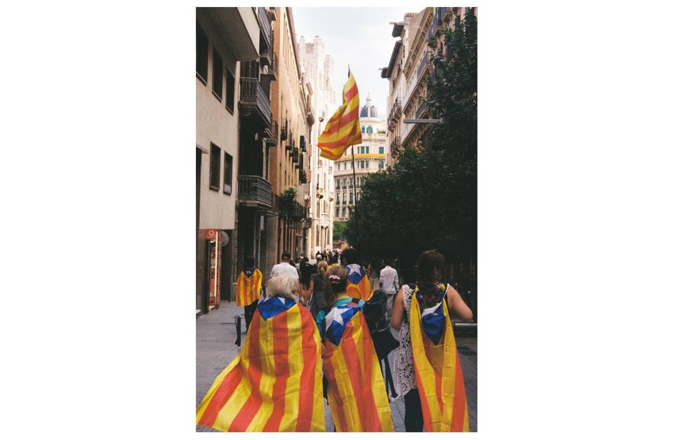
1 - L'avi Siset em parlava
Pa’ Siset spoke to me softly
Go to erenerken.art

Pa’ Siset spoke to me softly
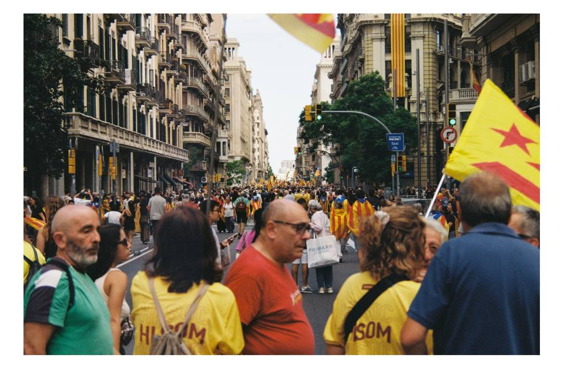
One morning just before dawn,
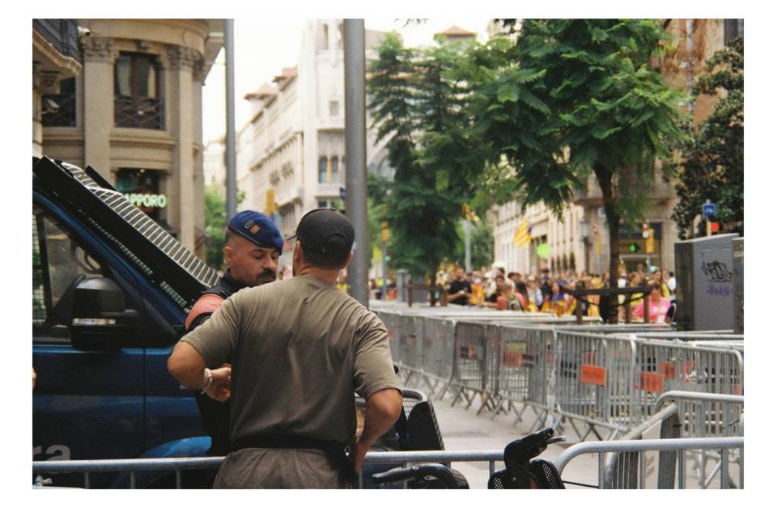
Light danced beneath the horizon
As cars passed our door and were gone.
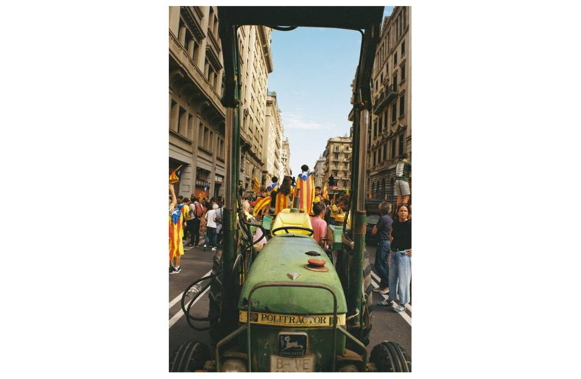
Siset, can’t you see that stake there
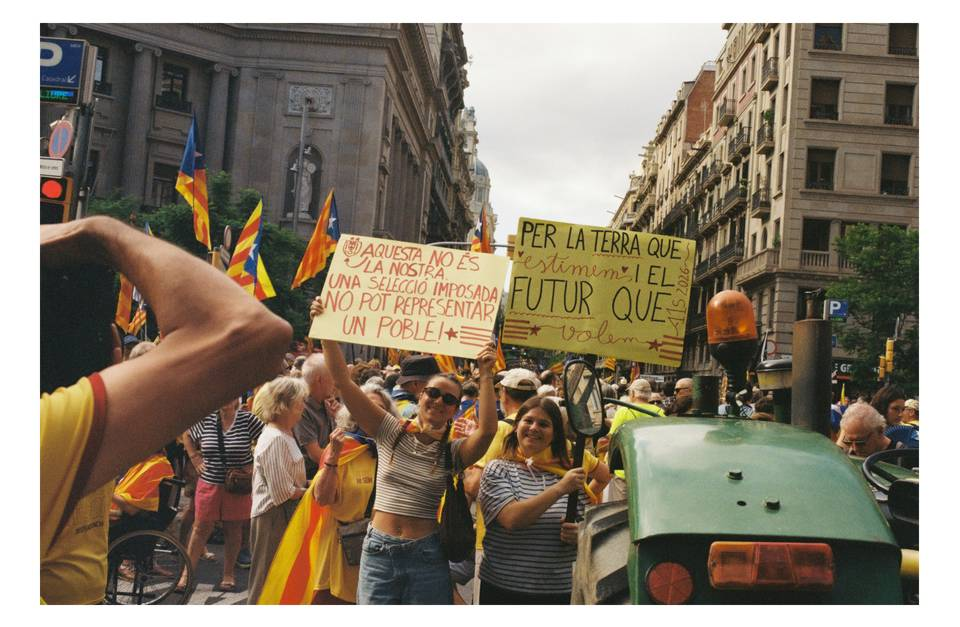
To which we’re tethered?
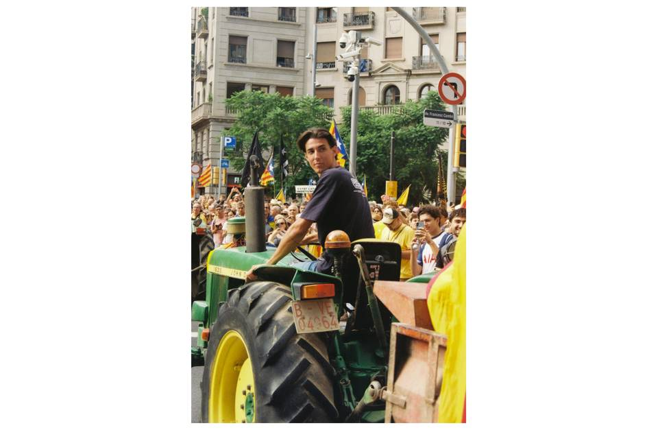
Unless these can be broken,
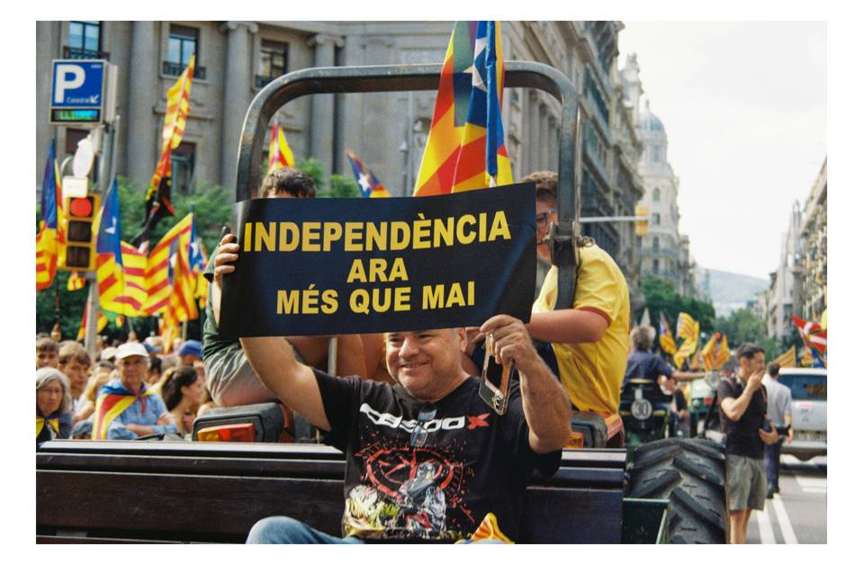
We’ll never be able to walk!
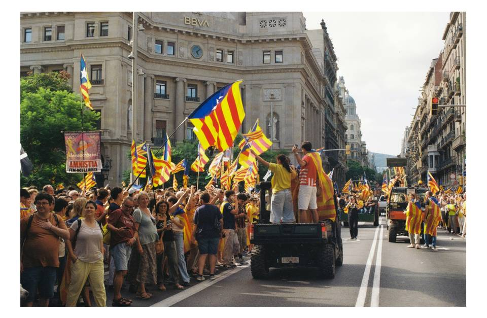
But if we pull you’ll see it fall
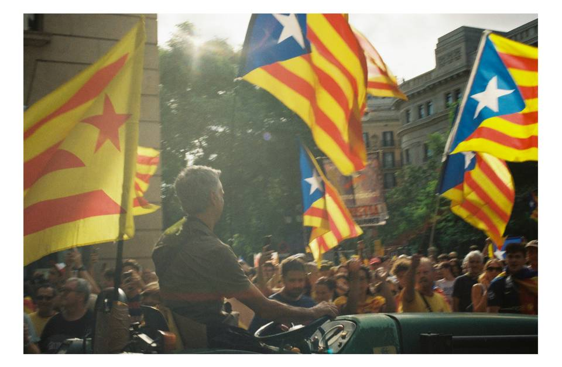
It cannot last much more at all,
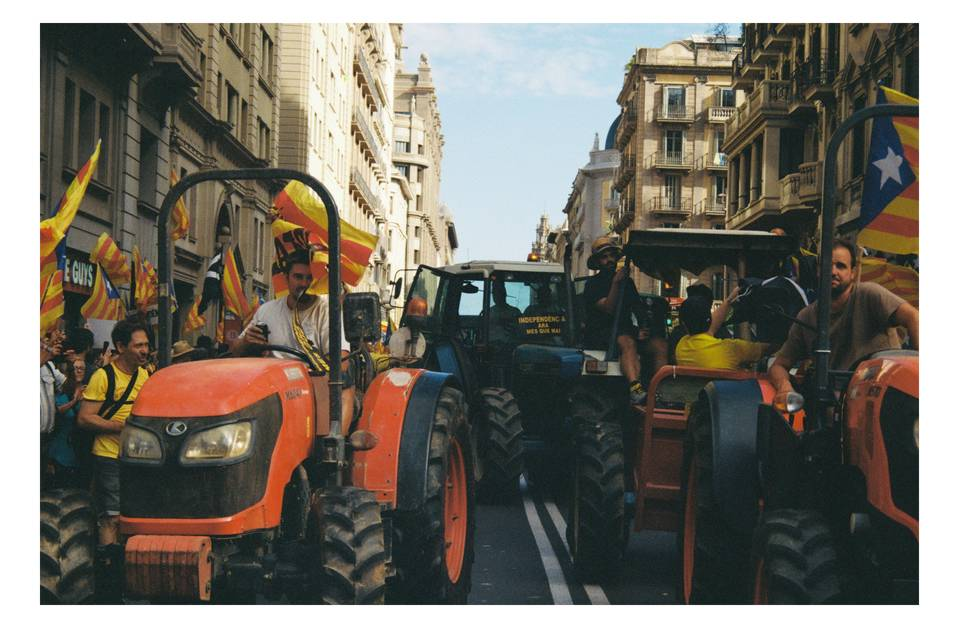
You’ll see it tumble, tumble, tumble
Crumbling down you’ll hear us call.
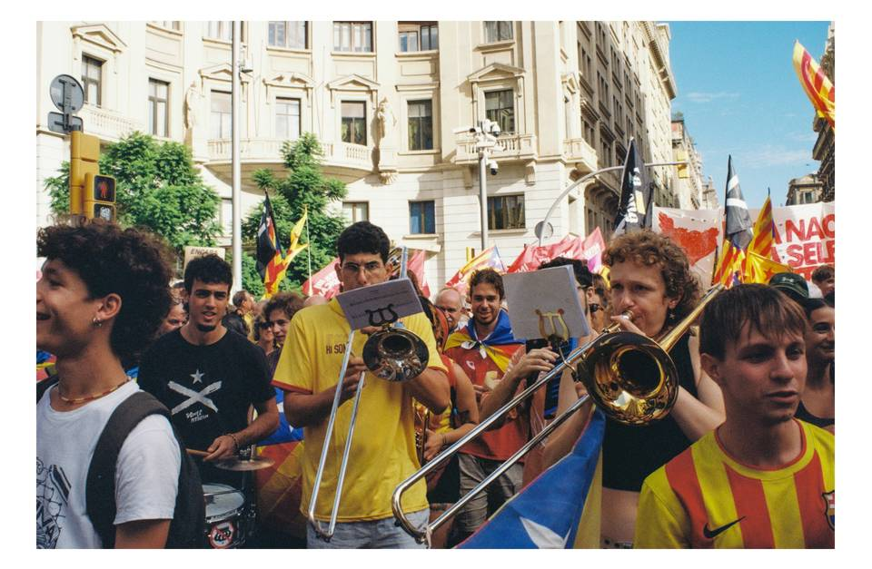
I grab my chains and pull for you
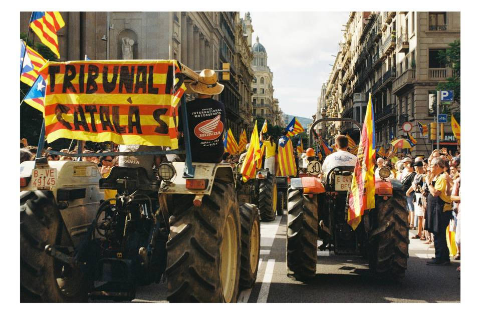
Pick up your chains and pull for me,
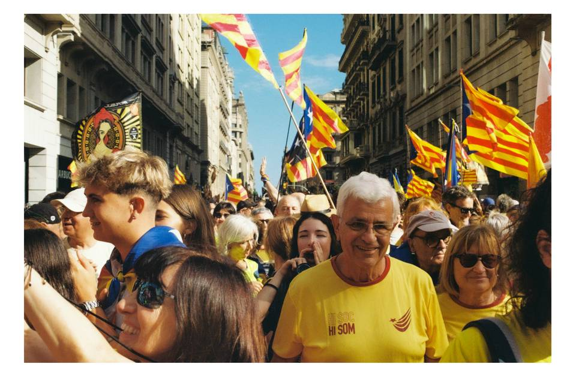
You’ll see it tumble, tumble, tumble
Only then will we be free.